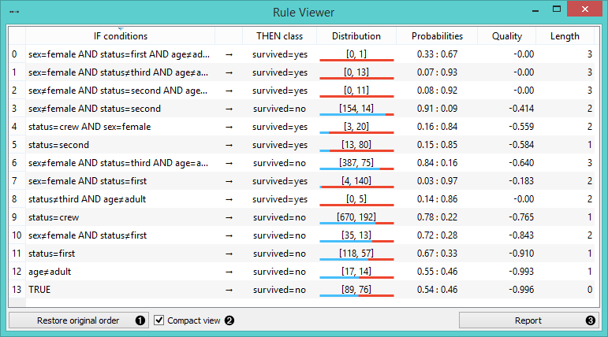
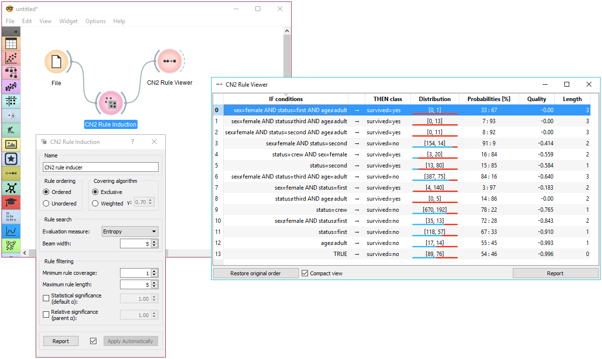

CN2 Rule Viewer
CN2 Rule Viewer
Inputs
- Data: dataset to filter
- CN2 Rule Classifier: CN2 Rule Classifier, including a list of induced rules
Outputs
- Filtered Data: data instances covered by all selected rules
A widget that displays CN2 classification rules. If data is also connected, upon rule selection, one can analyze which instances abide to the conditions.

- Original order of induced rules can be restored.
- When rules are many and complex, the view can appear packed. For this reason, compact view was implemented, which allows a flat presentation and a cleaner inspection of rules.
- Click Report to bring up a detailed description of the rule induction algorithm and its parameters, the data domain, and induced rules.
Additionally, upon selection, rules can be copied to clipboard by pressing the default system shortcut (ctrl+C, cmd+C).
Examples
In the schema below, the most common use of the widget is presented. First, the data is read and a CN2 rule classifier is trained. We are using titanic dataset for the rule construction. The rules are then viewed using the Rule Viewer. To explore different CN2 algorithms and understand how adjusting parameters influences the learning process, Rule Viewer should be kept open and in sight, while setting the CN2 learning algorithm (the presentation will be updated promptly).

Selecting a rule outputs filtered data instances. These can be viewed in a Data Table.